Project Introduction
- With this independent study, I intended to fill a gap in my portfolio—the lack of concept art.
- In order to fill that gap, I plan to utilize Procreate to produce concept art sheets, including process sketches and a finished illustration assembled on one page, for characters, props, creatures, and environments. I will also touch on other aspects of character concept art, such as turnarounds, expression sheets, and character lineups.
- My process will consist largely of two-week sprints, during which I will create artwork, then reflect in my work journal on how the sprint went.
- My work and reflections will be reviewed by my professor for critique.
Worldbuilding

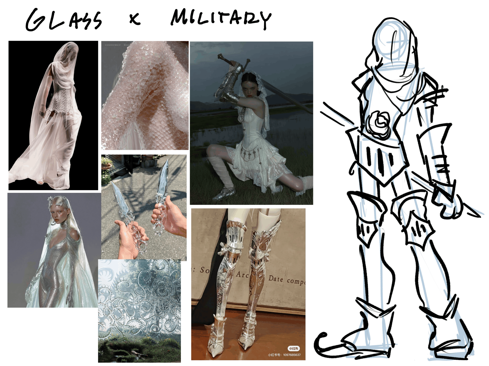
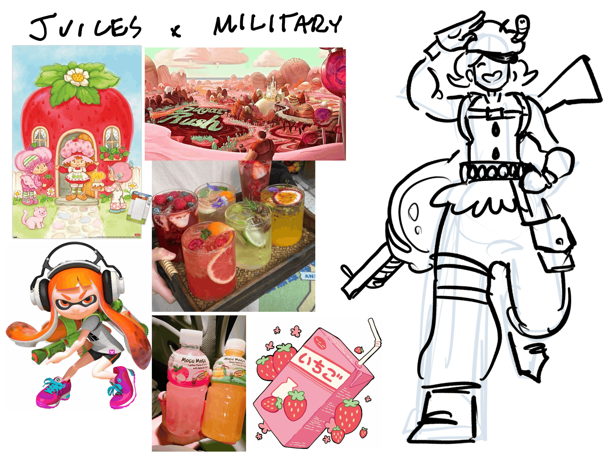
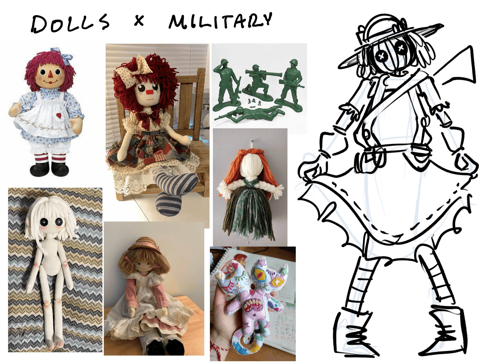
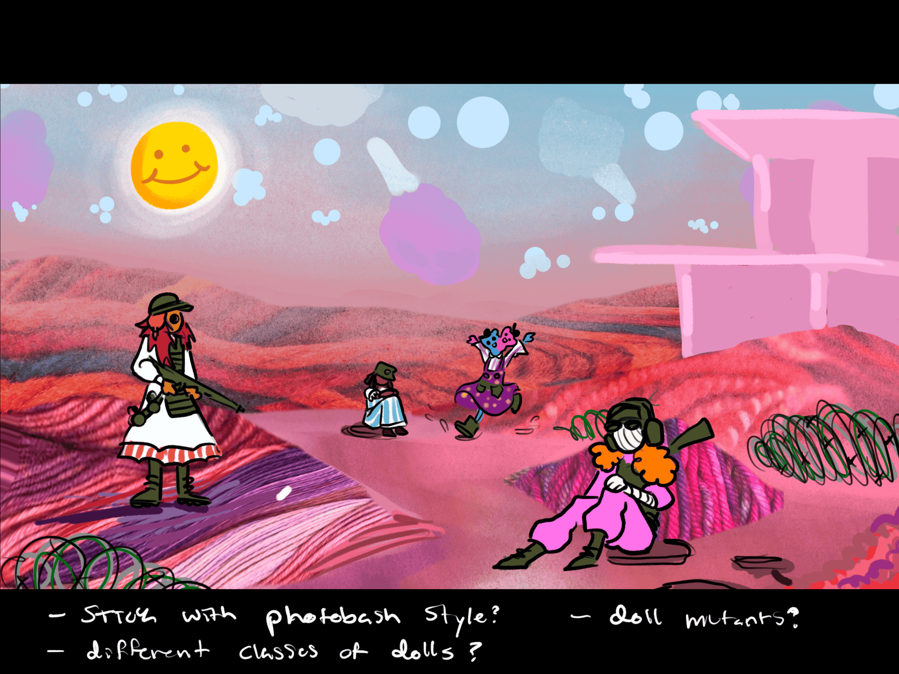
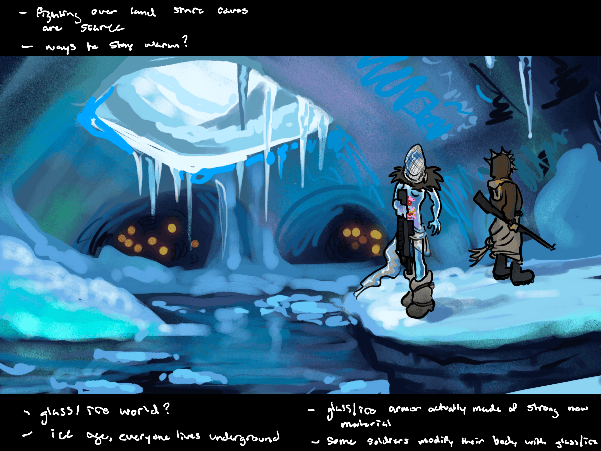
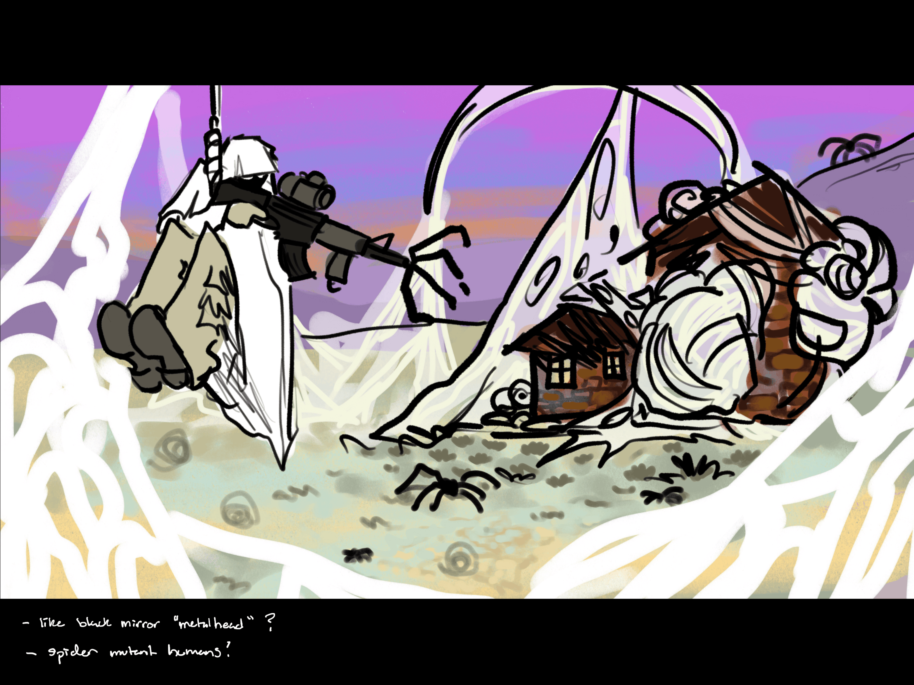
Reflection
During this sprint, I planned to build worlds to make concept art around and narrow it down to one with my professor. I accomplished this goal, but I had to replan the schedule to accommodate for this extra module; however, the extra time to flesh out a world was necessary.
I learned that, going forward in other projects, I should allot more time for brainstorming and concepting instead of diving straight into work.
In the next sprint, I plan to create characters to inhabit the world I created during this sprint. Nothing is blocking me from completing this goal except that my work-life balance isn’t the greatest right now, but, otherwise, I should be okay.

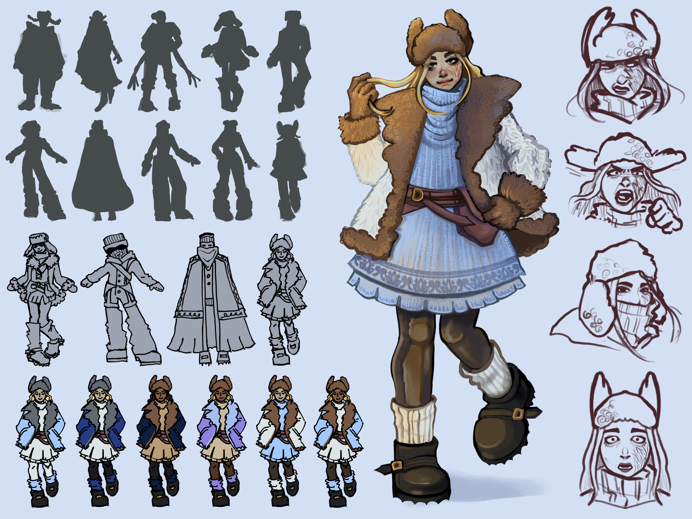
Character Design
During this sprint, I planned to do a page or so of character sketches based on concept world. Pick 2 character designs to finish (one sheet per). Silhouette thumbnails, a couple of expressions, one prop, illustrated pose. I accomplished this goal. I ended up doing things a little differently than planned, going into a character sheet with a general idea of who I wanted the character to be, rather than sketching silhouettes of many different characters that could live in this world. These drawings took much longer than anticipated, so I was off my schedule by a day, but I am happy with the quality of work.
I learned that I really enjoy drawing different textures, such as the different types of fur and sweater materials in the second character’s outfit. I also learned that more sketches are better, as evidenced by how I increased from 5 to 10 silhouettes from the first to second character.
In the next two-week sprint, I will be creating an animated turnaround for one of these two characters, most likely the first one. There is nothing blocking me from completing this goal so far. It’s been a while since I’ve animated, but I don’t think that will be a problem due to the simple nature of a turnaround.

Character Turnaround
During this sprint, I planned to do a page or so of character sketches based on concept world. Pick 2 character designs to finish (one sheet per). Silhouette thumbnails, a couple of expressions, one prop, illustrated pose. I accomplished this goal. I ended up doing things a little differently than planned, going into a character sheet with a general idea of who I wanted the character to be, rather than sketching silhouettes of many different characters that could live in this world. These drawings took much longer than anticipated, so I was off my schedule by a day, but I am happy with the quality of work.
I learned that I really enjoy drawing different textures, such as the different types of fur and sweater materials in the second character’s outfit. I also learned that more sketches are better, as evidenced by how I increased from 5 to 10 silhouettes from the first to second character.
In the next two-week sprint, I will be creating an animated turnaround for one of these two characters, most likely the first one. There is nothing blocking me from completing this goal so far. It’s been a while since I’ve animated, but I don’t think that will be a problem due to the simple nature of a turnaround.
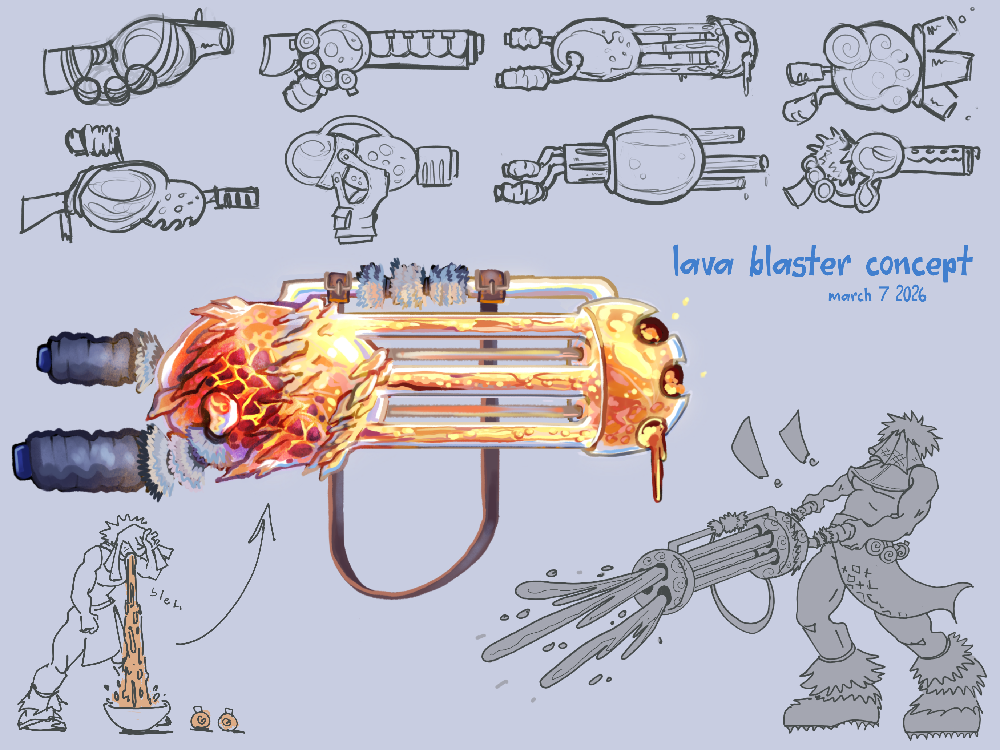
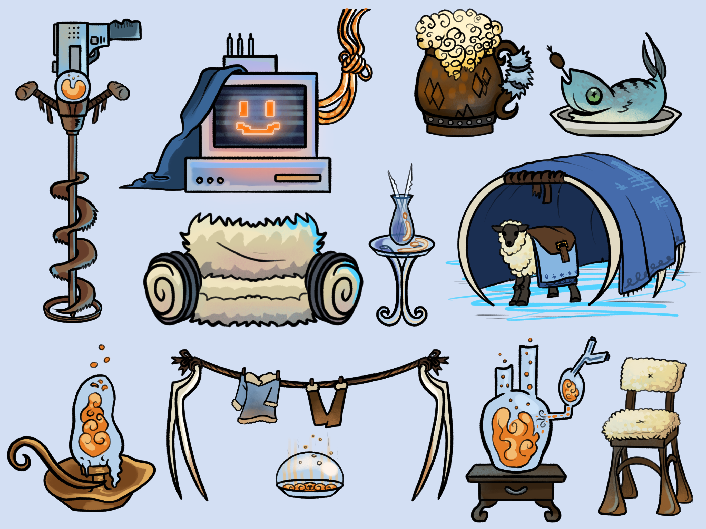
Prop Design
During this sprint, I planned to create a page or so of weapon sketches based on concept world, then pick 1 weapon to create a finished illustrated sheet for. Then, I would do a page or so of other prop sketches that could fit in the world together, then make 1 finished sheet of a bunch of illustrated props. I accomplished this goal, but I am more satisfied with the weapons page than the props page because, due to time constraints, I opted for drawing the props in a more simplified style that is not as visually appealing.
I learned that I don’t care too much for prop design—or I at least need to spend more time learning about it. I found it difficult to ideate props, maybe because I didn’t narrow it down to one kind of environment within the visual development world. I also learned that I really do enjoy drawing weapons.
In the next two week sprint, I will be drawing creatures. Spring break occurs during this sprint, but I think I allotted enough time to still complete everything I plan to draw.
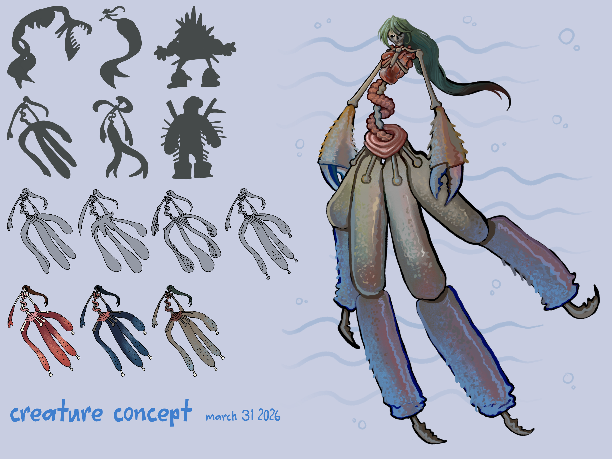
Creature Design
During this sprint, I planned to draw a page or so of creature sketches based on concept world. Next, pick 1 creature design to finish, then draw silhouette thumbnails & illustrated pose. I accomplished this goal, and I am pretty satisfied with the result. The design came easily to me as I love drawing disjointed body parts like this.
I continued to learn about how to think about my world in a greater context of its visual and narrative themes. For example, the exposed intestines in this creature echo the semitransparent organs in the warrior class of characters.
In the next sprint, I will be drawing environments. I don’t particularly care for drawing environments, so I’m going to have to figure out something that I enjoy drawing within them and focus on that.

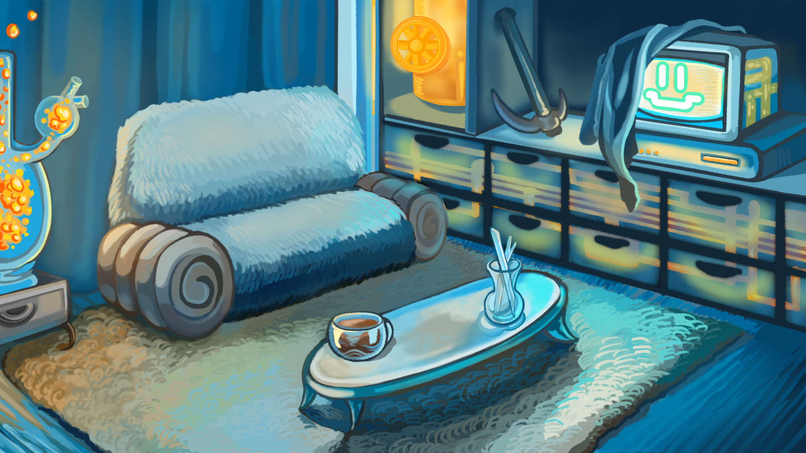
Environment Design
During this sprint, I planned to create a page or so of environment sketches based on concept world, then pick 2 environments to fully compose & illustrate. I mostly accomplished this goal, but I only ended up drawing one fully rendered environment instead of two because I felt most of the thumbnails ended up having a decent amount of detail in them. It also took me a few extra days to finish the final piece because I visited home this weekend, and so I had intended to complete the artwork on the plane & bus, but got incredibly motion sick and had to take a break from screens.
I learned more about the visual language of this world, leaning into fur and transparency.
In the next sprint, I will create a character lineup and begin work on my course final. I don’t think anything should interfere with that goal other than maybe senior capstone work, but the lineup isn’t super complex, so I don’t foresee it being a huge issue.
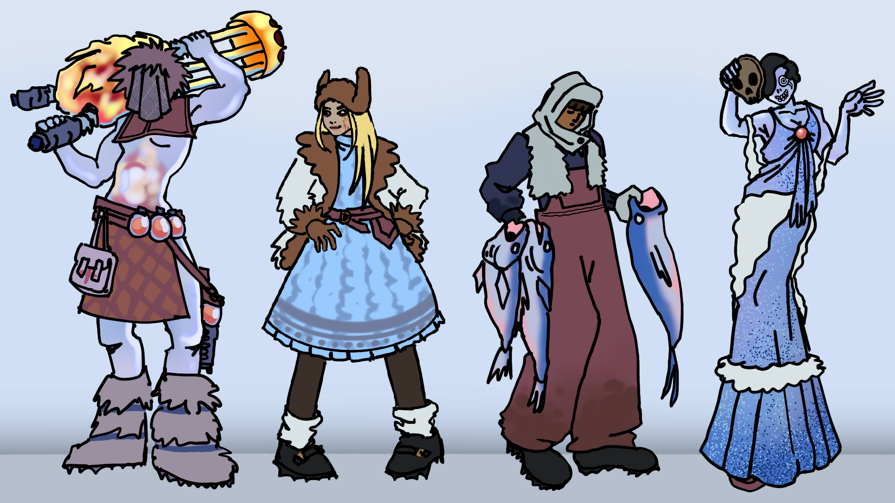
Character Lineup
During this sprint, I planned to do a page or so of character sketches that could fit in a world together, then create a clean sketch & color character lineup with at least 4 characters. I accomplished this goal!
This was more of a laid-back sprint that I knew would be fun for me, so I continued learning about my love for character design. The linework is a little messy, but I also enjoy the doodle-y nature of it.
I had planned for this to be the last piece for this storyworld, but, after some feedback from my professor, he wanted to see a piece of cover art for Deepwinter Vein since I had some extra time. So, in the next two-week sprint, I will be creating a logo for this storyworld and a dynamic key art piece. I will also be working on my final presentation and such.

Cover Art & Logo
During this sprint, after the encouragement from my professor to develop one final art piece, I planned to create a dynamic key art piece for a book/comic cover and a logo for the storyworld.
For the logo, I spent a lot of time trying to figure out a title, but I feel like this one at least somewhat encapsulates what I’m going for. I like the word “vein” for referencing the body horror aspect of the world while simultaneously referring to a geological vein, so “Deepwinter Vein” also acts as the name of the underground fissure this society lives in. “Deep” in “Deepwinter” alludes to the fact that this winter has gone on for a long period of time, ingraining its rules deep into society. Stylistically, I leaned into the translucent glass motif I’ve been using and then overlaid some leaf veins on top for texture and color.
As for the mock comic book cover, I think I could’ve shown this piece a little more love.
I learned that making logos is pretty fun and I really enjoy working in Figma. I also learned that I needed to either a) allot more time to working on the key art piece or b) go with a more simplistic style. There’s something that doesn’t feel right about it, whether it just looks kinda unfinished/flat, that it could use some color correction, or that everybody is just kinda standing around.
My professor agreed with my critique, commenting: “I’d suggest you revisit this to make it more dynamic. This just looks like they’re discussing what to have for lunch.”